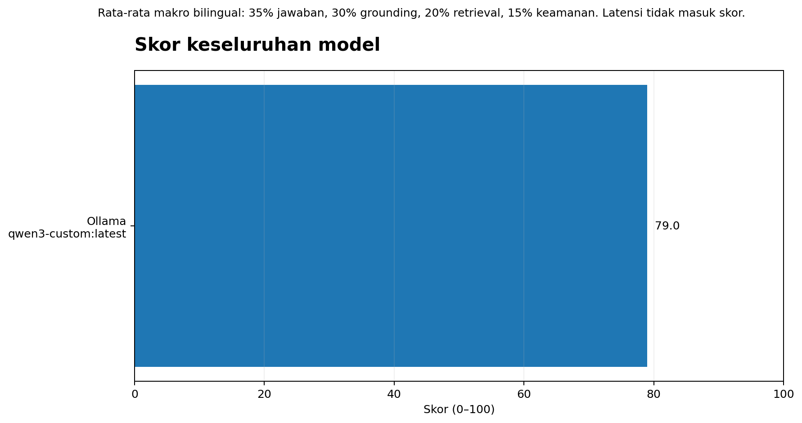
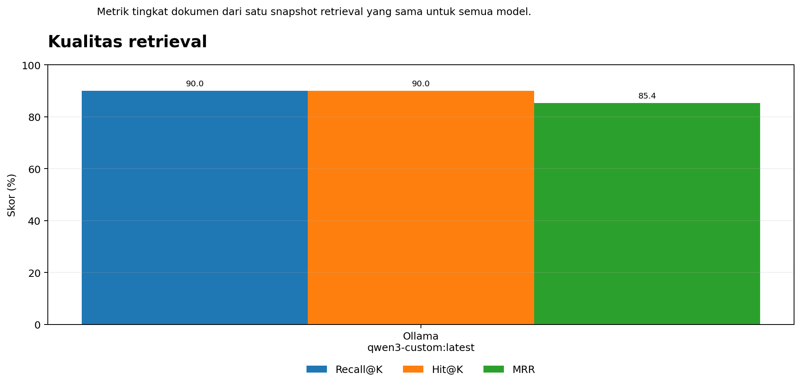
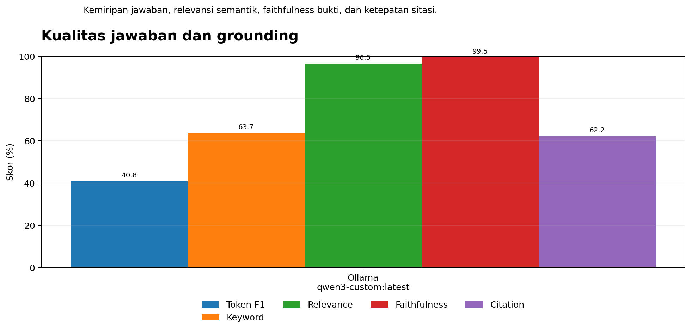
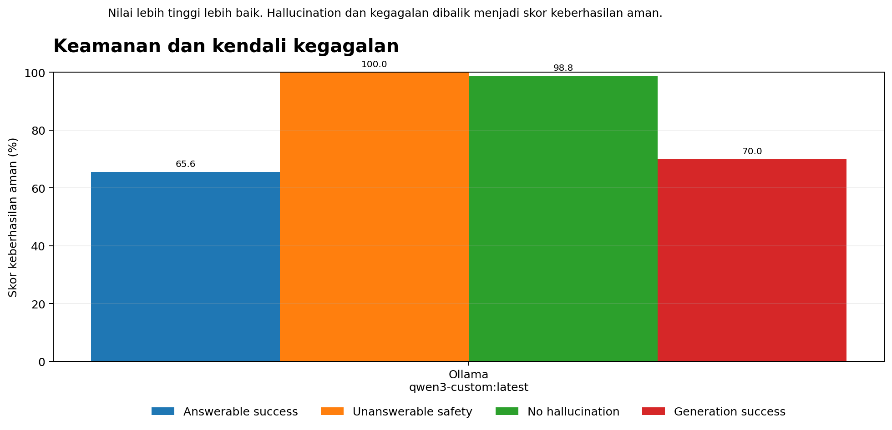
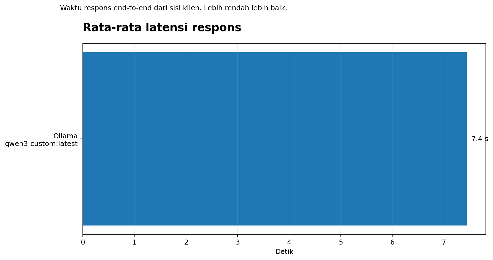
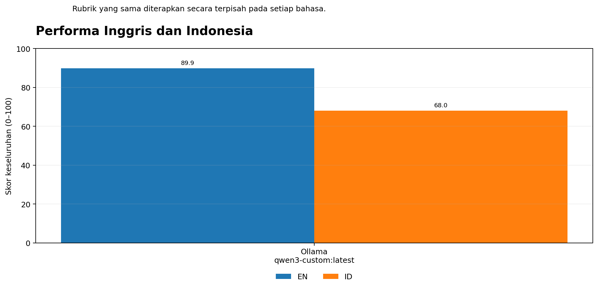

Ollama, Gemini, and Groq compared on the same bilingual question set and retrieval evidence.
| Model | Overall | Answer | Grounding | Retrieval | Safety | Avg latency (ms) |
|---|---|---|---|---|---|---|
| ollama | 78.98 | 67.01 | 86.85 | 88.46 | 78.52 | 7440.7992 |





